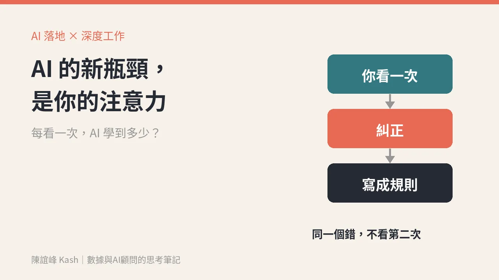

AI 的新瓶頸不是模型，是你還剩多少注意力可以盯著它學
導入 AI 之後，最稀缺的不是工具，是主管盯場的那幾分心思。每一次糾正如果沒有被記住，你就會為同一個錯，一看再看。

這不是工具夠不夠強的問題，而是你還剩多少注意力可以盯著它學。
### AI 加快了產出，卻把你綁在旁邊盯場
常見的情況是，AI 確實讓產出變快了，但代價是你得一直盯著它，而且情境切換變多了。
這不是效率的問題，而是注意力被重新分配的問題。導入成本除了授權費，還有你每天花在盯場上的那幾分心思。
你有沒有想過，產出變快之後，誰來負責把那些修正記住？
### 兩種餵法都容易失敗
教 AI 懂你的偏好，通常會碰到兩種失敗。太輕的做法是只按讚倒讚，資訊量太少；太重的做法是每次都寫一大段回饋，多數人不願意持續。
問題不在你夠不夠認真，而在這套餵法本身能不能持續。
### 值得回答的問題才算數
AI 問你問題，只有在你真的會回答、答案能幫它理解你的偏好時，才值得問。這個交換對你也要有回報。
有一個測試是這樣做的：讓 AI 模仿特定作者的寫法，一次寫好的「寫得像我」指令，輸給直接把作者過去的文章整包給模型，五位都是如此。
後來改成讓 AI 代理反覆修改指令十幾輪，每輪只留分數比較好的版本。修完之後，五位中有四位是指令版勝出。
我的判斷是，重點不在一次餵得準不準，而在能不能反覆改、把較好的版本留下。你糾正一次，如果沒有被記住，下一輪還是從頭來。
### 把每次糾正變成規則
這其實是深度工作的 AI 版：專注力本來就是知識工作者最稀缺的資源，AI 導入之後，只是把這件事放大。
如果只是把錯改掉，下次還要再改一次。
真正該算的不是 AI 幫你省了多少時間，而是每看一次、每改一次，有沒有變成下次不用再改。
主管該算的，就是每看一次，AI 學到多少。
下次你糾正 AI 的時候，先問自己：這一次的糾正，有沒有被寫成一條規則？還是只是又改了一次表面答案？